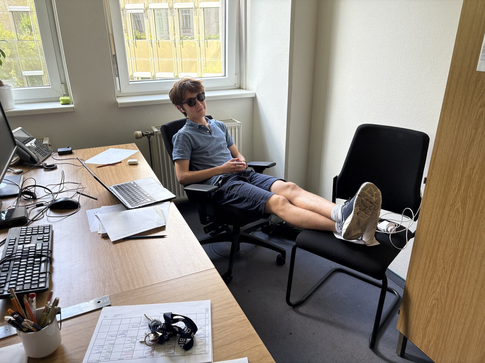

Bio
I'm a junior at Sidwell Friends School in Washington, D.C. My main interests are in history, linguistics, and in using computational tools to study these fields.
A lot of my recent work has centered on the Indus Script, though this research has split into two somewhat different projects. My first set of projects center on identifying sign functions, especially the distinction between syllabic and logographic signs. My second project, under the mentorship of Rajesh Rao, focuses on the semantic roles of recurring sign clusters. I received an Emergent Ventures grant in 2025 to support these computational analyses.
Nearby to that is my work on Indian historical linguistics, especially the Dravidian language family, which I researched at the TU Berlin in 2025. Here I worked under the supervision of Andreas Fuls and Martin Kada on constructing a structured Proto-Dravidian lexical database: dravidiandb.com/dravi/index.htm
I also work on the history of written Chinese, where I conducted a computational analysis on Chinese newspapers during the period from 1910 to 1945. I conduct digital humanities research at the Mount Zion and Female Union Band Cemetery, where I build interactive maps and digital resources from archival material. My work here centers on uncovering the history of these forgotten Black cemeteries in Georgetown.
Beyond research, I'm an avid runner and I run cross-country and track at Sidwell. I play violin, particularly klezmer and bluegrass. I've been learning Yiddish as part of my interest in Eastern European Jewish culture. I also listen to a lot of ska and rocksteady and read about folk music history, Woody Guthrie, and American labor culture. I captain my school's It's Academic quiz bowl team. I'm also interested in Civil War history, particularly military technology; Tibetan history during the period of de facto independence; and Ancient Indian history.

Education
Experience
Awards & honors
- Emergent Ventures Grant ($5,000), 2025 — For research on computational decoding of the Indus Script.
- Scholastic Art & Writing Awards — Gold Key, Critical Essay, 2024 and 2025.
- D.C. JV State Cross-Country Championships — 9th place, 2024. Varsity Cross-Country, 9th–11th grade.
- John Locke Essay Competition — High Commendation, 2023.
- MathCounts — 4th place, State (2023); 3rd place, Chapter (2022); State Invitational Recognition Award (2021).
Contact
Email: louis.merriam [at] gmail.com. I try to respond to everything.